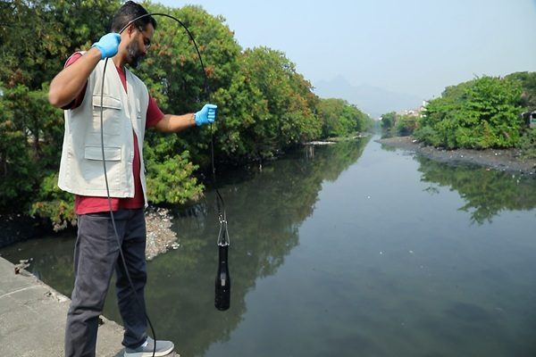

Pesquisa da Fiocruz detecta cocaína em cinco rios do Rio de Janeiro
Níveis superam os de estudos na Bélgica, na Espanha e nos EUA; em laboratório, as concentrações encontradas causaram danos a embriões de peixe.

Um estudo liderado pelo Instituto Oswaldo Cruz (IOC/Fiocruz) encontrou cocaína e benzoilecgonina — o principal derivado da droga, eliminado na urina dos usuários — em cinco rios da capital fluminense e da Baixada: Irajá, Carioca, Meriti e os canais do Cunha e do Mangue, todos desaguando na Baía de Guanabara. Os resultados foram publicados na revista Aquatic Toxicology.
Os pesquisadores coletaram amostras todos os meses entre julho de 2022 e junho de 2023. Das 60 amostras, só uma não tinha cocaína, e todas tinham o metabólito, em níveis superiores aos relatados em estudos semelhantes na Bélgica, na Espanha e nos Estados Unidos. A contaminação foi maior na estação chuvosa, com pico em janeiro, e o predomínio do metabólito indica que a principal origem é o esgoto.
Em ensaios com embriões de peixe-zebra, as concentrações encontradas nos rios aumentaram a mortalidade e provocaram deformações e alterações cardiovasculares e neurológicas; o metabólito foi ainda mais nocivo, causando danos com apenas 13% da concentração medida no ambiente. Os autores defendem incluir essas substâncias nos programas de monitoramento e de avaliação de risco ecológico.